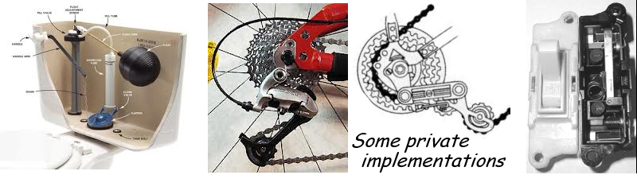
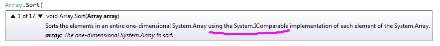

30. Interfaces¶
30.1. The Bigger Picture¶
Up until this point in our book, an object’s type has
determined its state and behaviour, and how we use it.
Because tess is a Turtle, we can call Turn and Forward methods,
or get the Heading property. Because playground is a Canvas,
we can set its background brush or get its size.
The word interface is used with two different meanings in programming. The real-world meaning is “the way we interact with an object”. This is separate from “how it works”, or its implementation. In our classes we’ve made some members public (that’s its interface to the outside world), and some members private (that’s how we chose to implement the interface).
So when our boss says “What’s the interface to the Random class?”, he is probably asking us to describe its public methods and members.
In C# (and some other languages, notably Java) we have a second more formal meaning the word. An interface is a language construct which contains some method signatures (and possibly a few other things) that defines a contract.
Object-oriented thinking in programming arose because people looked at the world around them, saw objects, grouped them into types, and realized that they had certain attributes, or states, and were capable of different behaviours. So we thought that would be a good way to organize software too!
But in real life, its not just “type” that determines how things can be used. Objects can be one type of thing, but also have different “roles”. A person might have roles like a “parent”, or a “chess player” or a “student”.
So let’s look at some devices that we use every day: our digital camera, our smart-phone, our Internet provider, our USB flash stick, our portable music player, our TV, our tablet PC, our alarm clock, our FM radio.
They’re all different types of things, but some of them can perform in roles that others can’t. Which of the devices can act in the role of “memory device for storing a file”? Which can act in the role of “music player”? Which can act in the role of “video player”? Which of these devices can act in the role of “camera” and take a photograph? Which can act as a “email reader”, a “calculator”, an “alarm clock” or a “radio receiver”?
So in programming, in addition to defining something’s type, (i.e. what it is), we want some extra mechanism to describe and add extra roles or different ways in which it can be used.
This is what a formal programming interface is all about: it describes a role that an object can play when it interacts with other objects.
When we plug our phone into our computer’s USB port and copy some files into its memory, our computer doesn’t need to know the type of the object we’ve plugged in — whether this is a phone, an external hard drive, or a camera, or a USB flash stick. All it needs to know is that this object is capable of the role “memory device for storing a file”.
It turns out that we’ve seen this repeatedly already in our book, but we just have not fully identified where it has been happening.
Let’s think about the
foreach loop. We use it with strings, with arrays, with lists,
with dictionary keys, etc. In C#, a class needs to provide a method
called GetEnumerator. It returns an object with methods that allow
foreach to get at every item in turn. So if we look at IntelliSense
for a string, an array, a list or a dictionary, we’ll always find
a method called GetEnumerator.
This is the magic that lets the foreach traverse different types of things: they
can all play the particular role required by foreach, even though they’re
all objects of fundamentally different types.
For another take on Interfaces, see Dave’s page
30.2. Back to the low-level code¶
Learning to define and implement our own interfaces is a bit beyond the scope of this book. But we will look at one or two interfaces that are already defined in the .Net Framework, and see some ways in which we can use them.
An interface is really a “contract” between a class, and the “consumer” that wants to use the class. In C#, this contract specifies what members must be implemented in order to fulfil the contract.
30.2.1. Example 1¶
In our chapter on list and array algorithms we sorted an array of strings using Array.Sort.
We also used this in the Queens algorithm, where we shuffled our queens by using
random integers as the keys for the sort.
Take a close look at this code: we’ve created four arrays, three of them were able to be sorted just fine, but we’ve got a run-time error for the array of Rectangles. It failed to compare two elements of the array. Why?
Here’s a hint from IntelliSense:
What the message is telling us is that it doesn’t mind what type of
objects are in the array, but whatever they are, they must have an
IComparable interface. The IComparable contract specifies
that there must be a method called CompareTo (recall that we’ve
used this before when we used it to compare strings to each other).
So ints, strings, chars, DateTime have IComparable interfaces,
(and, by contract, they therefore must have a CompareTo method).
If we know how to compare them, we know how to sort them!
But we don’t have a way to compare Rectangle objects to each other.
Rectangle does not implement the interface IComparable.
When we define our own classes we need to ask whether it makes sense
to compare our new types of objects to each other. For example, it might
be sensible to allow Student objects to be ordered by student numbers.
In that case we might decide that our class should implement
IComparable, and we’d be required to write a
CompareTo method in our new class to achieve this.
30.2.2. Example 2¶
Here is a contract of
what an object needs to do to be able to fulfil the role IDictionary. (It is a
convention in C# to always name interface contracts with a name starting with a capital I.)
1 2 3 4 5 6 7 8 9 10 11 | public interface IDictionary<TKey, TValue> :
ICollection<KeyValuePair<TKey, TValue>>,
IEnumerable<KeyValuePair<TKey, TValue>>,
IEnumerable
{
ICollection<TValue> Values { get; }
TValue this[TKey key] { get; set; }
void Add(TKey key, TValue value);
bool Remove(TKey key);
bool TryGetValue(TKey key, out TValue value);
}
|
Notice the keyword interface in line 1.
In the contract, all we have are member definitions and type signatures. So the contract specifies “what” has to be available, not “how” any particular class chooses to do it.
Lines 2-4 says that in order to act in the role of
IDictionary, we’ve also got to be able to act in the role of ICollection
and IEnumerable. Those contracts have a few more methods and members that are
required. But more importantly, it shows that interface contracts can depend on,
or inherit, contract requirements from other interfaces.
Now when we (or the Microsoft developers) write a new class, we can provide the
“promise” side of the contract. We can say “We’re defining a new Turtle class, and
we want our turtle objects to also be able to act in the role of a dictionary, as
specified by the IDictionary interface”. So the class implements the interface.
Now the magic happens. If we have a turtle object, and if turtles can act as dictionaries (our turtles in this book cannot, by the way), then code like this would be possible:
Line 3 is the magic line. It says “we’re not interested in interacting with tess as
a turtle, we’re only interested in interacting with the object in terms of its
IDictionary role”. So we can define variable tdict so that its type is the interface type.
Now it is possible to assign any object to variable tdict, provided it knows
how to fulfil the role demanded by the interface.
30.3. Three flavours of polymorphism¶
Recall that polymorphism means “able to work with many types”.
We’ve used subtype-based polymorphism: a method that requires a Turtle argument can also
work for a subtype of Turtle, e.g. our TurtleGTX. This is what inheritance gives us.
The second type we’ve seen is parametric polymorphism: we use type parameters in List<T>
or in Dictionary<K,V>. Another name for parametric polymorphism is generic.
In this chapter we’ve now seen interface-based polymorphism. In the code example above, we’re able to treat tess as a dictionary. So all the dictionary methods are able to work with many types.
30.4. Type testing and casting¶
Sometimes we might need to “undo” the polymorphism. We have an object that we know is some
type of Turtle, but we’d really like to a) know if it really a more special kind of TurtleGTX,
and b) if it is, take advantage of its extra capabilities.
So let’s go back to our DrawSquare method from the Inheritance chapter. We saw there that
it works with any turtle. Now we’ll add this new requirement: if the turtle has extra capabilities,
(i.e. it is really a TurtleGTX), then get it to spin on each corner as it is draws the square.
Line 7 is a type test. It allows us to ask whether this turtle t is
actually a more derived (more capable) TurtleGTX. Line 9 defines a new
variable that can reference a TurtleGTX. The type name in the parentheses on the
right is called a cast or a type cast. It allows us to treat our turtle as
a TurtleGTX. Once we have our reference to a fancy turtle, we can
call its Spin() method.
You will get an exception if you attempt to type cast a plain turtle to a TurtleGTX. It
just doesn’t have the capabilities! That is why we tested first on line 7, to make sure
it could work. (You could wrap the type-cast in a try...catch block, but it is generally
considered bad style to write code that you expect to routinely throw exceptions.)
The mechanism we’ve shown above works in C#, Java, and a few other languages. But C# also has an alternative mechanism that is a widely used idiom:
The as keyword does a “safe” type cast, and returns null if
the cast was not possible.
Type testing and type casting also work if the type being tested and cast is an interface type.
30.5. Back to the high-level view¶
Let’s revisit the last example in the previous chapter now. The different specialized
implementations of dictionaries (Dictionary, SortedDictionary) all implement the
interface IDictionary.
So in the last example in the previous chapter, we set the return
type of the method to IDictionary, and we changed the calling code to
work in terms of that role rather than work with the type of the object.
This is a powerful technique. A role is more abstract than a type. By moving our thinking up to “what roles is each object capable of” rather than “What type of thing is this”, we create opportunities for phones that can also take photographs, or act as music players.
And putting a separate and explicit “contract” between our components — one side promises to fulfil the contract, the other side only uses the object in terms of what has been promised — leads to improved reliability in our systems.
It is quite easy now for us to go back to our example at the end of the last chapter
and choose some different dictionary
implementation in the letterFreqs method. As long as our new choice implements
IDictionary, nothing else will need changing.
Interfaces promote a kind of plug-and-play approach to software components, just as our USB interface allows a kind of plug-and-play way of hooking devices up to each other. As long as the interface is supported, we no longer have to care about the type of the object.
30.6. Glossary¶
- implement an interface
- A class that agrees to an interface contract is agreeing to provide certain functionality. It does so by providing properties and methods (and even other kinds of members) that fulfil its obligations.
- interface (the informal usage)
- The way something interacts with other components outside of itself. A gear lever in a motor car is an interface to the gearbox. In programming we use the word loosely to mean “the public members of a class”.
- interface (a formal programming interface)
- A specification of what methods and members an implementing class promises to the consumer of the functionality. Classes can implement many different interfaces.
- role
- Something that an object can do, as opposed to what it fundamentally is.
- type cast
- A conversion from one type to another.
- type test
- A test that lets us determine if an object is convertible to a specific type.
30.7. Exercises¶
- We want an interface called
IMusicPlayer. What methods and members should an object have so that others can interact with it in its role as a music player? - Some types are
ICloneable. Look up the interface, discover what members it promises. Find at least two types that are cloneable, and two that are not. Are arrays cloneable? Are lists cloneable? What aboutDateTimeand dictionaries? - Serialization of an object means “to convert it into some textual representation”.
For example, our XAML text is a serialized representation
of the GUI window we design. Many types of objects can be serialized,
so, as we might expect, there is an interface called
ISerializable. Look up help forISerializableand determine what members a class must provide in order to fulfil this role.